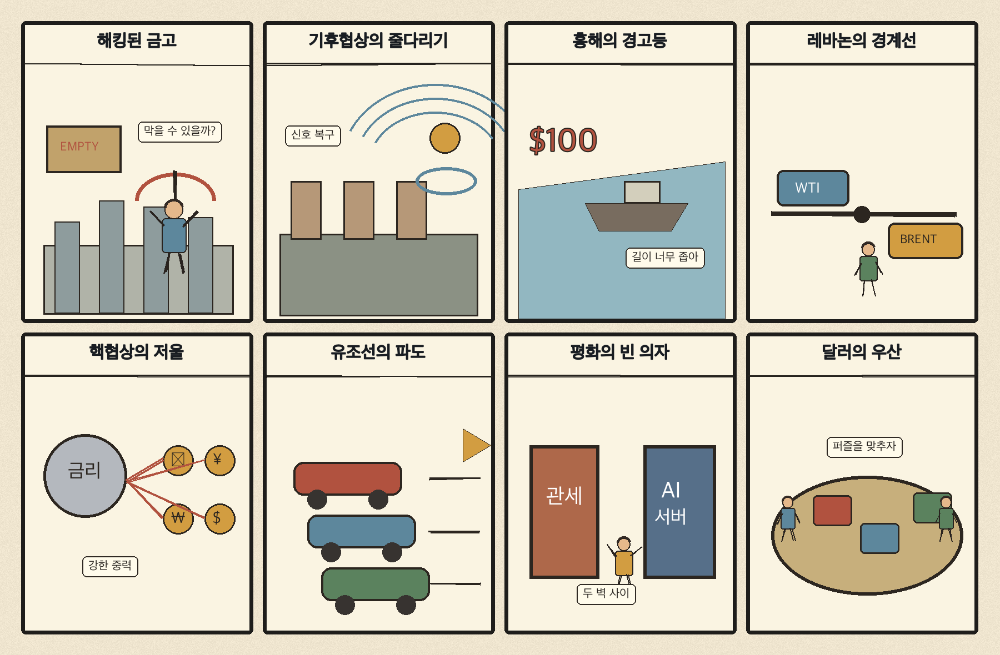
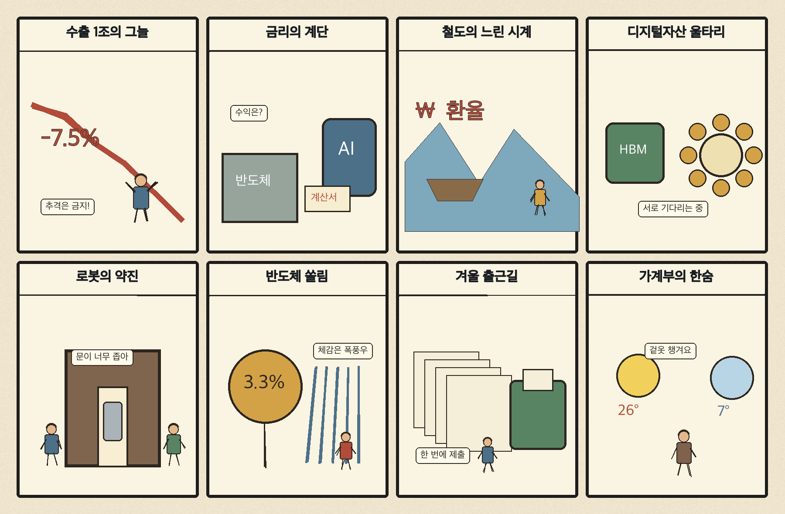

01
엔비디아 · 143.57→125.53달러 · -12.57%
내용요약 시가 대비 -12.57%로 조사군 최하위였습니다.
예상여파 AI 반도체 전반의 위험 프리미엄을 높였습니다.
MORNING_BRIEFING_20261122
작성 시각: 2026-11-22 06:33 KST · 직전 미국 정규장과 2026-11-22 KST 당일 공개 기사 기준
직전 미국 정규장인 11월 20일 뉴욕증시는 다우 -1.93%, S&P 500 -3.70%, 나스닥 -5.28%로 급락했습니다. 엔비디아는 시가 대비 -12.57%, 브로드컴 -11.09%, 마이크론 -10.68%를 기록했습니다. 한국장은 일요일 휴장이므로 월요일에는 낙폭과대 반등을 추격하기보다 외국인 수급과 갭 변동성 안정 여부를 먼저 확인해야 합니다.
| 지수 | 종가 | 등락률 | 한국 증시 시사점 |
|---|---|---|---|
| 다우존스 | 48,147.33 | -1.93% | 경기·금융 심리 위축 |
| S&P 500 | 6,910.39 | -3.70% | 위험회피 확대 |
| 나스닥 종합 | 22,617.73 | -5.28% | 기술주 변동성 경계 |
AI·반도체 중심의 위험회피가 월요일 한국장에 부담입니다.
직전 거래일 4,869.96으로 마감해 변동성 관리가 우선입니다.
금리 인상 경로가 주식·부동산과 원화 흐름의 변수입니다.
월요일 시가와 외국인 현·선물 수급을 확인합니다.
11월 21일 보고서는 휴장과 급격한 위험회피 속에서 점수·확률·손익비 문턱을 모두 검증한 후보가 없어 공식 추천을 내지 않았습니다. 사후 종목을 추가하지 않습니다.
| 시장 | 종가 | 등락률 | 기준 |
|---|---|---|---|
| KOSPI | 4,869.96 | -5.21% | 11월 20일 · 시가 대비 -1.19% |
| KOSDAQ | 645.68 | -5.71% | 11월 20일 · 시가 대비 -2.31% |
| 다우존스 | 48,147.33 | -1.93% | 미국 11월 20일 정규장 |
| S&P 500 | 6,910.39 | -3.70% | 미국 11월 20일 정규장 |
| 나스닥 종합 | 22,617.73 | -5.28% | 미국 11월 20일 정규장 |
셰브론 +0.93%, 엑슨모빌 +0.73%로 방어했습니다.
국내 급락장에서도 로봇주가 상대강세를 보였으나 과열을 경계합니다.
엔비디아 -12.57%, 브로드컴 -11.09%, 마이크론 -10.68%였습니다.
마이크로스트래티지 -10.01%, 로켓랩 -8.70%로 밀렸습니다.
내용요약 시가 대비 -12.57%로 조사군 최하위였습니다.
예상여파 AI 반도체 전반의 위험 프리미엄을 높였습니다.
내용요약 시가 대비 -11.09%로 급락했습니다.
예상여파 AI 네트워크 투자 기대의 재평가가 국내 공급망 심리에도 부담입니다.
내용요약 시가 대비 -10.68% 하락했습니다.
예상여파 메모리와 HBM 관련주의 동반 약세 가능성을 높입니다.
내용요약 시가 대비 -10.40%로 밀렸습니다.
예상여파 고밸류 반도체 설계주까지 매도가 확산됐습니다.
내용요약 시가 대비 +0.93%로 조사군 최상위였습니다.
예상여파 급락장에서 에너지 대형주의 방어력이 부각됐습니다.
한국장은 일요일 휴장입니다. 월요일에는 나스닥 -5.28%와 엔비디아·마이크론의 두 자릿수 급락이 국내 HBM·반도체 대형주의 갭 위험으로 이어질 수 있습니다. KOSPI가 직전 거래일 -5.21% 하락한 만큼 단순 낙폭과대 반등을 추격하지 말고 원달러 환율, 외국인 현·선물 수급과 4,800선 방어를 확인해야 합니다.
오늘은 추천 없음 — 현금 관망
한국장이 휴장이고 직전 미국 나스닥 -5.28%, AI 반도체 두 자릿수 급락, KOSPI -5.21%가 겹쳤습니다. 월요일 당일 시가·실시간 수급과 30건 이상 유사 조건 표본을 확보할 수 없어 종합점수 75점·상승확률 60%·예상 손익비 1.5를 모두 검증한 후보가 없습니다.
관심 연결종목 로봇·에너지의 상대강세는 관찰 대상일 뿐 매수 추천이 아닙니다. 갭하락 뒤 반등도 추격매수를 금지합니다.
반도체 대형주의 갭과 변동성 축소 여부를 봅니다.
KOSPI 현물·선물 동시 매수 전환을 확인합니다.
긴축 전망이 원화·은행·부동산에 미칠 영향을 살핍니다.
해상운임과 국제유가 위험 프리미엄을 점검합니다.
핵심 요약: AI 인프라의 수익성과 원자재 수요 우려가 커지는 한편 로봇·휴머노이드에는 자금이 몰리고 있습니다. 앤트로픽 상장 초기 변동성과 AI를 활용한 해킹 사례는 성장 기대와 보안 위험이 동시에 확대되고 있음을 보여줍니다.
내용요약 AI 인프라 투자 우려와 시장의 위험회피가 겹치며 경기 선행지표로 불리는 구리 관련주가 하락했다는 분석입니다.
예상여파 데이터센터·전력망 투자 속도에 대한 의구심이 커지면 구리와 전력설비, AI 인프라 공급망의 높은 밸류에이션이 재조정될 수 있습니다.
내용요약 증시 급락 속에서도 로봇 관련주는 상대적으로 강해 일부 종목의 시가총액이 반도체 장비주를 넘어섰습니다.
예상여파 피지컬 AI 성장 기대가 자금을 끌어들이지만 단기 쏠림과 실적 대비 과열 여부를 함께 살펴야 합니다.
내용요약 국내 대학 연쇄 해킹 과정에서 중국 해킹 커뮤니티와 연관된 AI 도구의 흔적이 포착됐다는 보도입니다.
예상여파 공격 자동화가 교육기관의 보안 격차를 키울 수 있어 계정·네트워크 감시와 AI 기반 위협 탐지 투자가 중요해집니다.
내용요약 국내 투자자들이 앤트로픽 상장 첫날 약 2천200억원을 순매수한 것으로 집계됐습니다.
예상여파 생성형 AI 기업의 성장 기대가 크지만 상장 초기 급등락과 수익성 논쟁 때문에 추격 투자 위험도 높습니다.
내용요약 삼성전자의 제조·부품 역량을 바탕으로 휴머노이드 상용화 가능성을 짚은 산업 분석입니다.
예상여파 로봇의 센서·반도체·배터리·구동부 생태계가 커질 수 있으나 실제 제품 일정과 수익모델 확인이 선행돼야 합니다.
핵심 요약: 홍해와 레바논, 이란을 둘러싼 중동 긴장이 항로와 에너지 시장의 위험을 높이고 있습니다. 기후총회 합의 난항과 미국 연방기관 해킹은 정책·보안 비용을 키우는 변수입니다.
내용요약 미 연방수사국까지 해킹 피해를 입었다는 보도가 나오며 미국 공공기관의 사이버 보안 문제가 다시 부각됐습니다.
예상여파 정부·금융기관의 보안 예산과 공급망 인증이 강화될 가능성이 있어 글로벌 사이버보안 업종의 수요 요인입니다.
내용요약 기후총회가 화석연료 퇴출과 기후재원 문구를 둘러싼 이견으로 합의 결렬 위기에 놓였습니다.
예상여파 합의 지연은 에너지 전환 정책과 탄소시장 규칙의 불확실성을 높여 관련 투자 일정에 영향을 줄 수 있습니다.
내용요약 사우디가 후티 반군과의 교전 격화 속에 예멘 호데이다항을 공습했다는 보도입니다.
예상여파 홍해 항로의 군사 위험이 커지면 선박 우회와 보험료·해상운임 상승 압력이 다시 확대될 수 있습니다.
내용요약 레바논 대통령이 이스라엘의 레바논 영토 점령을 주장하며 철군을 촉구했습니다.
예상여파 접경 충돌이 장기화하면 중동의 지정학적 위험과 에너지 가격 변동성이 높아질 수 있습니다.
내용요약 트럼프 대통령이 이란의 핵무기 보유를 막는 영구적 합의를 원한다고 밝혔습니다.
예상여파 협상 기대와 군사 긴장이 교차하며 국제유가와 중동 위험자산의 변동성이 이어질 가능성이 있습니다.

핵심 요약: 수출 1조달러 기대와 반도체 편중이 함께 부각됐고, 한은의 금리 인상 전망은 가계·부동산 부담을 높입니다. 이번 주 디지털자산 기본법과 철도 준법투쟁, 영하권 추위를 점검해야 합니다.
내용요약 한국의 연간 수출이 1조달러에 근접해 세계 4위가 예상되지만 반도체를 제외하면 순위가 8위로 낮아진다는 분석입니다.
예상여파 수출 외형 확대에도 반도체 편중을 줄이기 위한 자동차·기계·소비재 경쟁력 강화가 과제로 남습니다.
내용요약 한국은행이 석 달 만에 기준금리 인상을 재개하고 내년까지 긴축 기조를 이어갈 수 있다는 전망입니다.
예상여파 대출이자와 부동산 조달 부담은 커질 수 있고 원화·은행주에는 정책 경로가 핵심 변수가 됩니다.
내용요약 철도노조가 월요일부터 준법투쟁에 들어가 열차 운행 차질 가능성이 제기됐습니다.
예상여파 출근·물류 일정에 지연이 발생할 수 있어 이용객과 기업은 운행 공지와 대체 교통편을 확인해야 합니다.
내용요약 정부가 디지털자산 시장을 포괄적으로 규율하는 기본법 정부안을 이번 주 공개할 예정입니다.
예상여파 거래소·발행사 의무와 투자자 보호 기준이 구체화되면 업계 비용과 제도권 편입 속도가 함께 달라질 수 있습니다.
내용요약 절기상 소설인 오늘 전국은 대체로 맑지만 전남과 제주 일부에 비나 눈이 예보됐습니다.
예상여파 영하권 추위와 도로 결빙, 농축산물 냉해에 대비하고 야외 활동 시 체감온도를 살펴야 합니다.
